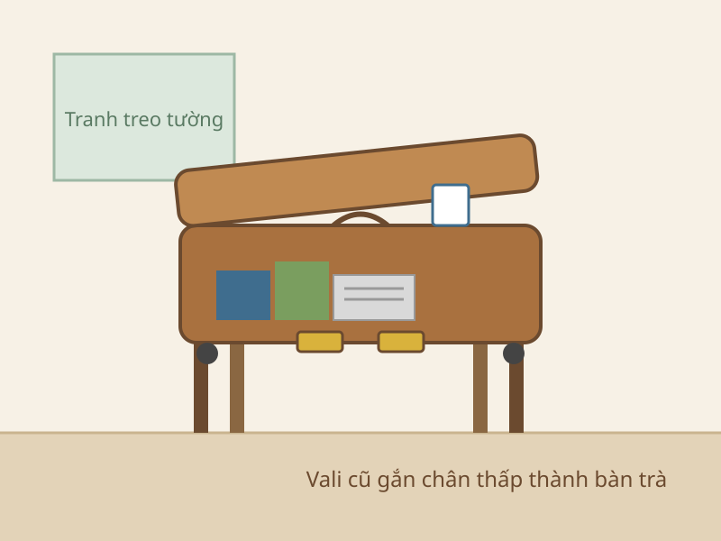

Tận dụng vali cũ làm bàn trà và hộp đựng đồ
Tác giả: Ruler
Một chiếc vali cũ trong góc nhà thường bị coi là đồ bỏ đi: khóa đã lỏng, bánh xe đã mòn, lớp lót bên trong đã sờn. Nhưng với nhà nhỏ, chiếc vali đó vẫn làm được hai việc: vali cứng còn chắc có thể thành bàn trà thấp đặt trước ghế ngồi, còn vali mềm còn lành có thể thành hộp đựng đồ trượt gọn dưới gầm giường. Bài này hướng dẫn cả hai cách làm.
Bài này chỉ làm bàn trà và hộp đựng đồ từ vali cũ — không có cây cảnh, không có hoa tươi. Bài cũng không dạy lại cách chọn ván gỗ cũ của Bài 2 hay cách xử lý vải cũ của Bài 8, mà chỉ trỏ tới hai bài đó khi nhắc tới tấm ván lót đáy vali hay tấm vải lót trong vali.
Vali nào dùng được, vali nào nên bỏ
Trước khi nghĩ tới chân bàn hay chỗ đặt, bạn hãy đặt chiếc vali lên sàn và kiểm tra nó như kiểm tra một món đồ nội thất. Bàn trà phải chịu đồ đặt lên mỗi ngày, hộp đựng đồ phải chịu cảnh kéo ra kéo vào nhiều lần.
Vali cứng dùng được làm bàn trà là vali có vỏ còn nguyên hình, không nứt, không lõm sâu, và khi bạn ấn mạnh hai bàn tay xuống mặt trên thì vỏ không lún xuống rõ rệt. Khung viền quanh vali phải còn thẳng, hai nửa vỏ khép lại khít nhau, và bản lề còn giữ được nắp vali ở đúng vị trí. Bạn nên lắc nhẹ để nghe xem bên trong có tiếng lạo xạo của khung gãy hay ốc vít long ra hay không.
Khóa và chốt cũng cần kiểm tra, vì bàn trà làm từ vali vẫn cần mở ra để lấy đồ bên trong. Bạn nên thử khóa, mở từng chốt, xem chốt có giữ chặt không và có bị kẹt nửa chừng không. Rỉ nhẹ ở bề mặt chưa phải lý do bỏ vali; chỉ khi rỉ ăn sâu làm bản lề lung lay hay chốt không giữ được nữa mới nên bỏ.
Bánh xe là bộ phận dễ hỏng nhất của vali cũ, nhưng ít ảnh hưởng tới bàn trà, vì bạn sẽ gắn chân mới và bánh xe cũ không còn phải lăn nữa. Bạn chỉ cần kiểm tra bánh xe có vỡ vụn hay lòi trục ra ngoài không, vì trục vỡ làm đáy vali không còn phẳng. Với vali mềm làm hộp đựng đồ dưới gầm giường, bánh xe còn lăn được thì bạn kéo hộp ra dễ hơn; bánh xe đã hỏng thì bạn vẫn dùng được, chỉ là bạn phải nhấc hộp lên thay vì kéo lê nó trên sàn.
Vali nên bỏ là vali có vỏ nứt dài, khung viền gãy, bản lề long hẳn ra khỏi vỏ, hoặc đáy vali đã võng xuống rõ rệt khi bạn đặt đồ nhẹ lên trên. Vali mềm nên bỏ là vali có vải rách thành mảng lớn, đường may ở quai xách đã bung, hoặc khóa kéo đã hỏng hẳn không còn kéo được. Vali mốc nặng cũng nên bỏ nếu vết mốc đã ăn sâu vào lớp đệm hoặc mùi mốc vẫn nồng sau khi làm sạch và phơi khô theo cách ở mục sau.
| Loại vali | Hợp làm gì | Vì sao |
|---|---|---|
| Vali cứng vỏ còn nguyên, khung thẳng | Bàn trà thấp | Vỏ cứng chịu được đồ đặt lên mặt, nắp mở ra thành ngăn chứa |
| Vali cứng vỏ mỏng, đáy hơi võng | Chỉ làm hộp đựng đồ nhẹ | Vỏ mỏng không chịu được sức nặng dồn lên mặt |
| Vali mềm vải còn lành, khóa kéo còn tốt | Hộp đựng đồ dưới gầm giường | Nhẹ, dễ kéo ra, khóa kéo giữ bụi không lọt vào đồ |
| Vali mềm vải rách mảng lớn, quai bung | Bỏ | Không giữ được hình dáng, đồ đựng bên trong dễ rơi ra |
| Vali mốc nặng, mốc ăn sâu vào đệm | Bỏ nếu đã làm sạch mà mùi không hết | Mùi mốc ám sang đồ đựng bên trong |
Làm sạch vali cũ trước khi làm
Vali cũ phải được làm sạch trước khi làm thành đồ dùng trong nhà. Vali để lâu trong kho thường bám bụi ở các góc, ở khe khóa kéo và ở lớp lót bên trong, và bụi đó sẽ dính vào tay bạn trong lúc bạn khoan, bắt vít hay lót vải. Làm sạch trước cũng giúp bạn phát hiện vali nào đã mục, vì chỗ vải mục khi lau sẽ bở ra thêm.
Bạn nên lấy hết đồ cũ ra khỏi vali, mở hết các ngăn và khóa kéo, rồi dùng máy hút bụi có đầu chổi nhỏ hút sạch bụi trong các góc và khe vải. Sau đó, bạn lau mặt ngoài bằng khăn ẩm vắt ráo, lau mặt trong bằng khăn ẩm với một ít nước rửa chén pha loãng. Bạn nên tránh làm ướt sũng lớp lót, vì nước đọng trong lớp đệm rất lâu khô.
Với vali có vết mốc, bạn cần xử lý riêng trước khi dùng. Theo hướng dẫn của Baggage Blog, bạn nên mang vali ra ngoài trời, đeo găng tay và khẩu trang, chải nhẹ cho bong lớp mốc bám trên bề mặt, rồi xịt giấm trắng lên chỗ mốc và để khoảng một giờ. Sau đó, bạn chà nhẹ bằng bàn chải mềm, lau lại bằng khăn thấm nước xà phòng loãng, rồi lau lại bằng khăn thấm nước sạch. Cùng nguồn trên lưu ý không trộn giấm với thuốc tẩy, vì hơi bốc ra nguy hiểm, và thuốc tẩy có thể làm hỏng màu vải và lớp phủ của vali.
Bước quan trọng nhất sau khi lau mốc là phơi khô hoàn toàn. Theo cùng nguồn trên, bạn nên để vali mở ra, đặt ở nơi thoáng gió và có ánh nắng gián tiếp, cho tới khi khô hẳn, và việc này có thể mất một tới hai ngày. Bạn tuyệt đối không đóng vali lại hay cất đồ vào khi vali còn ẩm, vì đệm ẩm là nơi mốc quay lại nhanh nhất. Sau khi vali đã khô, nếu vẫn còn mùi mốc nhẹ, bạn có thể rắc baking soda vào bên trong, để qua một hoặc hai ngày rồi hút sạch, theo gợi ý của cùng nguồn trên. Nếu vali vẫn còn mùi mốc nồng sau khi đã làm đủ các bước trên, thì mốc đã ăn sâu vào lớp đệm mà bạn không chạm tới được, và bạn nên bỏ chiếc vali này, theo hướng dẫn của Baggage Blog.
Đo chỗ đặt và chọn chân bàn
Trước khi gắn chân, bạn nên đo chỗ đặt bàn trước, rồi mới chọn chân. Bạn nên đo chiều cao mặt ghế, khoảng trống từ ghế ra tới chỗ đặt bàn, và kích thước của chiếc vali. Bàn trà thấp hợp với nhà nhỏ khi mặt bàn cao ngang tầm đầu gối của người ngồi, để bạn đặt cốc nước xuống mà không phải với lên hay cúi xuống quá nhiều. Bạn có thể ngồi xuống ghế rồi ước lượng chiều cao từ sàn lên tới mặt bàn sao cho tay bạn đặt cốc xuống thoải mái.
Chân bàn cho bàn vali thường là chân thấp, có hai kiểu hay dùng: chân kẹp tóc bằng kim loại và chân gỗ ngắn tận dụng từ bàn ghế cũ. Chân kẹp tóc nhẹ, dễ bắt vít; chân gỗ ngắn chắc hơn, hợp với vali nặng. Dù chọn kiểu nào, bạn cũng nên chọn bốn chân cùng chiều cao và cùng kiểu, vì chân lệch nhau sẽ làm bàn bị cập kênh. Thời gian làm chiếc bàn này chỉ là ước chừng cho người mới làm lần đầu, chưa đo thực tế: làm sạch vali khoảng một buổi, gắn chân và lót lại bên trong khoảng một buổi chiều, gồm cả thời gian chờ keo khô.
Gắn chân thấp cho vali cứng thành bàn trà
Điểm khó nhất của bàn vali không phải là bắt chân vào, mà là làm sao cho chân có chỗ bám chắc. Đáy vali thường mỏng, ốc vít bắt trực tiếp vào đáy vali rất dễ long ra sau một thời gian dùng. Vì vậy, bạn cần lót một tấm đế cứng bên trong vali để chân có chỗ bám vào. Bạn cần bốn chân bàn thấp, một tấm ván ép mỏng hoặc vài thanh gỗ vụn làm khung lót đáy, ốc vít ngắn, máy khoan tay, thước dây và keo dán gỗ.
Theo cách làm của Pillar Box Blue, bạn cắt một tấm ván ép vừa với đáy vali, đặt tấm ván đó vào bên trong vali, rồi bắt chân bằng cách khoan lỗ qua đáy vali và vặn ốc xuyên qua đáy vali vào tấm ván ép bên trong. Tấm ván ép này vừa làm đế bám cho chân, vừa làm mặt đáy trong của vali phẳng hơn. Cùng nguồn trên cho biết người viết đã dùng bốn chân kẹp tóc cao 6 inch cho một chiếc bàn thấp, và đã cạo rỉ ở bản lề, ổ khóa bằng bùi nhùi thép trước khi gắn chân.
Một cách khác, theo hướng dẫn của Hometalk, là đóng một khung gỗ hình chữ nhật bằng gỗ vụn, đặt khung đó vào bên trong vali rồi dán keo và đè vật nặng lên trên để keo khô trong vài giờ. Sau đó, bạn lật úp vali lại, đo và đánh dấu vị trí bốn chân sao cho cách đều các mép, rồi bắt vít xuyên qua đáy vali vào đúng khung gỗ bên trong. Cùng nguồn trên lưu ý rằng bước lót khung này là cần thiết khi đáy vali mỏng và hơi võng khi ấn tay xuống, còn nếu đáy vali đã cứng sẵn thì bạn có thể không cần khung lót. Người viết trong nguồn này đã chọn chân ở độ cao của bàn trà, đo khoảng cách từ mép vali để bốn chân cách đều nhau.
Khi bắt chân, bạn nên lật úp vali lên mặt bàn phẳng, đặt tấm ván ép hoặc khung gỗ vào bên trong, đánh dấu vị trí bốn chân ở mặt dưới, khoan lỗ mồi nhỏ trước rồi mới vặn ốc. Sau khi bắt xong bốn chân, bạn lật vali lại, đặt bàn xuống sàn và ấn nhẹ lên bốn góc mặt bàn để kiểm tra bàn có bị cập kênh hay không.
Nếu lớp lót cũ đã rách hoặc ố vàng, bạn có thể dán giấy dán tường còn thừa hoặc vải sạch lên mặt trong của vali bằng keo dán, trước khi gắn chân, theo cách làm của Pillar Box Blue. Mở nắp vali ra là ngăn chứa bên trong để sách, tạp chí hay chăn mỏng, nhưng bạn chỉ nên đặt đồ nhẹ vào ngăn này và giữ nắp vali đóng khít khi dùng làm bàn.
Vali mềm cũ làm hộp đựng đồ dưới gầm giường
Vali mềm không hợp làm bàn trà, vì vải mềm không chịu được đồ đặt lên mặt, nhưng nó lại rất hợp làm hộp đựng đồ dưới gầm giường. Hộp vali mềm nhẹ, có quai xách để kéo ra, có khóa kéo giữ bụi không lọt vào đồ, và hình dáng dẹt của nó vừa với khoảng trống thấp dưới gầm giường mà hộp nhựa cứng thường không vừa.
Theo gợi ý của Family Handyman, vali cũ làm hộp đựng đồ dưới gầm giường chỉ cần làm sạch bên trong và lót bằng vải hoặc tấm gỗ tuyết tùng mỏng, rồi đựng chăn, giày, quần áo trái mùa hay đồ chơi cũ vào trong. Cùng nguồn trên cho biết vali làm hộp đựng đồ dưới gầm giường là lựa chọn thay thế cho thùng nhựa. Bạn nên đo chiều cao khoảng trống dưới gầm giường trước khi chọn vali, vì vali quá dày sẽ không trượt vào được, còn vali quá mỏng thì đựng được ít đồ.
Bạn nên chọn vali mềm có chiều dày vừa với gầm giường, khóa kéo còn kéo được trơn tru, và quai xách còn chắc. Trước khi đựng đồ, bạn lót một tấm vải sạch xuống đáy vali, rồi xếp đồ vào theo từng nhóm: chăn mỏng gấp gọn ở một bên, quần áo trái mùa cuộn tròn ở một bên, giày đặt trong túi vải riêng để không làm bẩn quần áo.
Gầm giường cao thì xếp được hai vali mỏng chồng lên nhau, gầm thấp thì chỉ dùng một vali mỏng. Bạn không nên nhồi vali quá căng, vì khóa kéo mau hỏng và vali phồng lên sẽ không trượt vừa gầm giường. Bạn cũng chỉ nên đựng đồ đã giặt sạch và phơi khô hoàn toàn, vì đồ ẩm đựng trong vali kín sẽ sinh mùi mốc.
Bảo quản và giới hạn an toàn
Bàn vali và hộp vali đều cần tránh ẩm và tránh nắng gắt trực tiếp. Bạn nên đặt bàn vali ở nơi thoáng và khô, tránh đặt sát tường bị thấm nước hoặc gần cửa sổ hay bị hắt mưa. Bạn nên lau mặt bàn bằng khăn khô hoặc khăn hơi ẩm, không nên lau bằng khăn quá ướt, vì nước thấm vào lớp lót bên trong rất lâu khô. Bạn nên kiểm tra chân bàn vài tháng một lần và vặn chặt lại ốc vít ngay khi thấy bàn hơi lung lay.
Giới hạn quan trọng nhất của bàn vali là sức nặng đặt lên mặt bàn. Vali cũ không phải là bàn gỗ thật, và không có con số chịu lực chung nào cho mọi chiếc vali, vì mỗi chiếc vali có vỏ dày mỏng khác nhau và tấm lót bên trong khác nhau. Bạn chỉ nên đặt lên bàn vali những đồ nhẹ như cốc nước, sách, tạp chí hay đèn bàn nhỏ, và không nên đặt đồ quá nặng lên bàn vali.
Bạn cũng không nên dùng vali mốc hay vali chưa xử lý mốc để làm bàn hay hộp đựng đồ, vì đồ đựng bên trong sẽ bị ám mùi và bụi mốc có thể gây khó chịu cho người nhạy cảm với bụi. Bạn nên nhờ người có kinh nghiệm khi đáy vali đã nứt, khung viền đã gãy, hoặc bàn vẫn cập kênh dù đã chỉnh nhiều lần.
Kết luận
Tận dụng vali cũ làm bàn trà và hộp đựng đồ là một cách gọn gàng để nhà nhỏ có thêm chỗ đặt đồ và chỗ cất đồ mà không cần mua thêm đồ nội thất mới. Ba điều quan trọng nhất là: chọn vali còn chắc và kiểm tra kỹ khóa, bánh xe và khung; làm sạch và phơi khô vali hoàn toàn trước khi dùng, và bỏ vali mốc nặng không xử lý được; gắn chân vào tấm lót cứng bên trong thay vì bắt trực tiếp vào đáy vali mỏng, và chỉ đặt đồ nhẹ lên bàn vali. Làm được ba việc đó, chiếc vali cũ sẽ thành bàn trà có ngăn chứa và hộp đựng đồ trượt gọn dưới gầm giường.
Nguồn tham khảo
- Pillar Box Blue, "How To Make An Old Suitcase Table" — dùng cho các khẳng định: vali cũ có thể thành bàn thấp đặt cạnh giường hay bàn trà, bên trong vẫn là ngăn chứa đồ; cạo rỉ ở bản lề, ổ khóa bằng bùi nhùi thép; gỡ lớp lót cũ hỏng và lót lại bằng giấy dán; cắt tấm ván ép vừa đáy vali làm đế bám cho chân; dùng bốn chân kẹp tóc cao 6 inch cho bàn thấp; bắt chân bằng cách khoan qua đáy vali và vặn ốc vào tấm ván ép bên trong (truy cập 23/11/2026): https://www.pillarboxblue.com/upcycled-vintage-suitcase-side-table/
- Hometalk, "DIY Suitcase Table" — dùng cho các khẳng định: đáy vali cũ thường mỏng và hơi võng khi ấn tay, nên cần lót khung gỗ bên trong để chân có chỗ bám chắc; đóng khung gỗ hình chữ nhật bằng gỗ vụn, dán keo và đè vật nặng để keo khô trong vài giờ; đo và đánh dấu vị trí bốn chân cách đều các mép, bắt vít xuyên qua đáy vali vào đúng khung gỗ bên trong; chọn chân ở độ cao của bàn trà (truy cập 23/11/2026): https://www.hometalk.com/posts/build/furniture/diy-suitcase-table-44812927
- Family Handyman, "10 Ways to Reuse/Upcycle Items Around the House for Storage" — dùng cho các khẳng định: vali cũ là hộp đựng đồ kín đáo dưới gầm giường, chỉ cần làm sạch bên trong và lót bằng vải hoặc tấm gỗ tuyết tùng mỏng; đựng được chăn, giày, quần áo trái mùa hay đồ chơi cũ; hợp với phòng ngủ nhỏ hoặc phòng khách, là lựa chọn thay thế cho thùng nhựa (truy cập 23/11/2026): https://www.familyhandyman.com/list/upcycled-storage-ideas/
- Baggage Blog, "How to Remove Mold From Luggage Safely" — dùng cho các khẳng định: xử lý mốc bằng cách mang vali ra ngoài trời, đeo găng tay và khẩu trang, chải nhẹ lớp mốc, xịt giấm trắng và để khoảng một giờ, rồi chà nhẹ, lau bằng nước xà phòng loãng và lau lại bằng nước sạch; không trộn giấm với thuốc tẩy; phơi khô hoàn toàn trong một tới hai ngày, kiểm tra kỹ lớp đệm và các góc, không đóng vali khi còn ẩm; khử mùi mốc còn lại bằng baking soda hoặc than hoạt tính trong một tới hai ngày; bỏ vali khi mốc đã ăn sâu vào lớp đệm, mốc quay lại sau khi làm sạch, hay mùi mốc không hết (truy cập 23/11/2026): https://baggage.blog/how-to-remove-mold-from-luggage/
Phương án ảnh

Đây là sơ đồ minh họa, không phải ảnh chụp thực hành